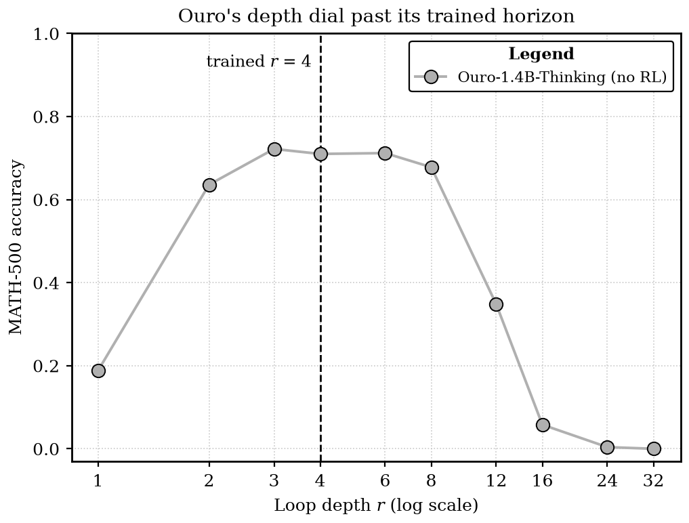
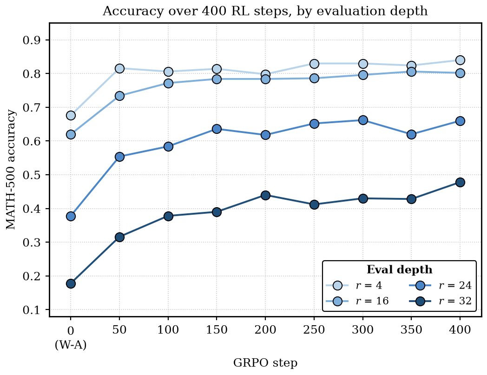
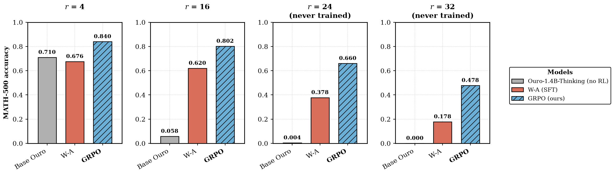
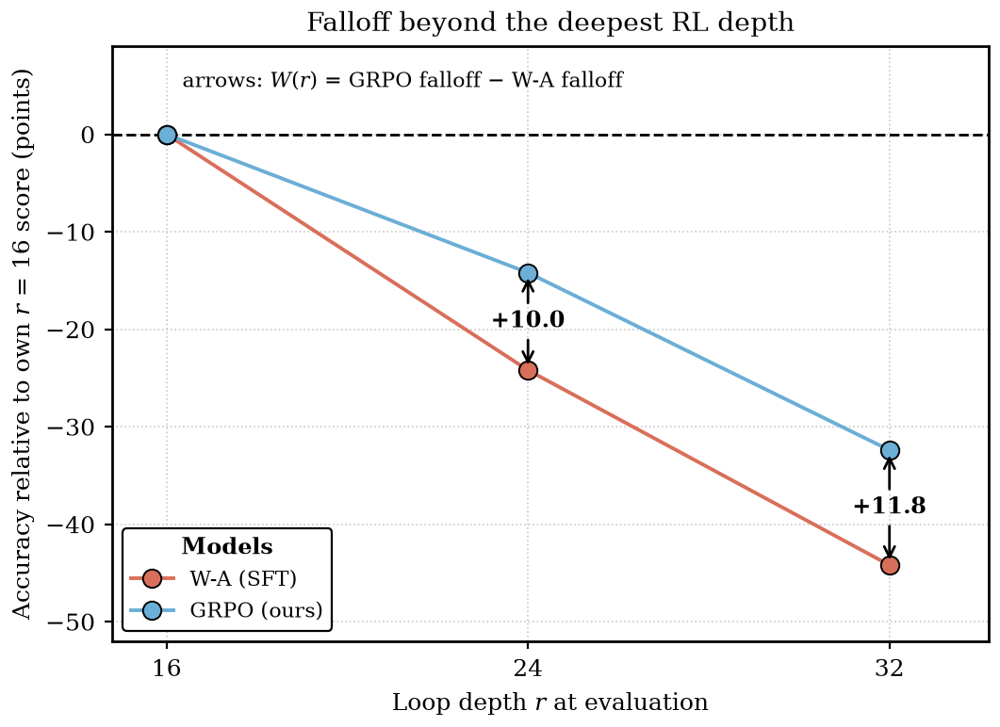
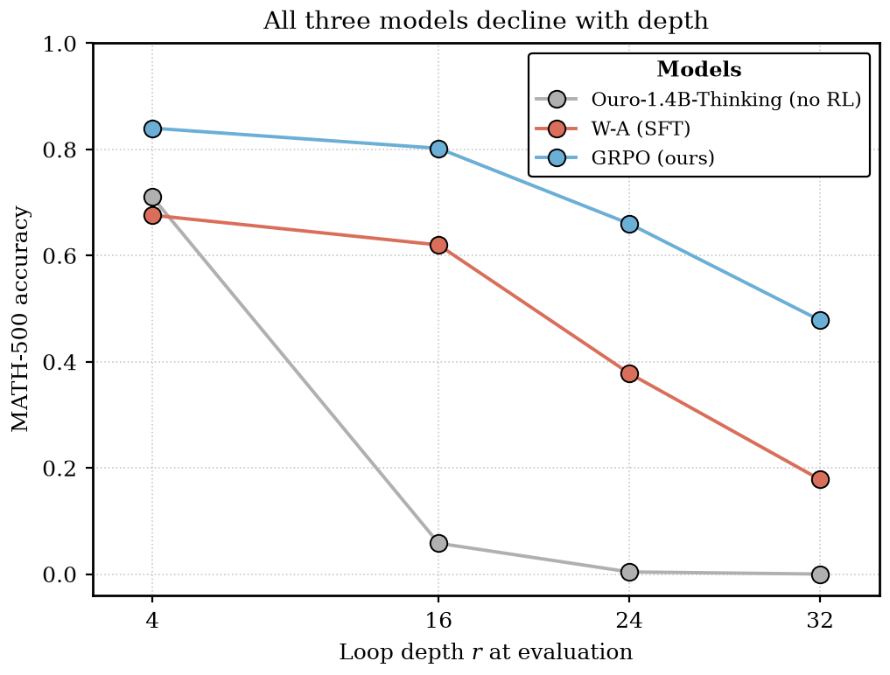
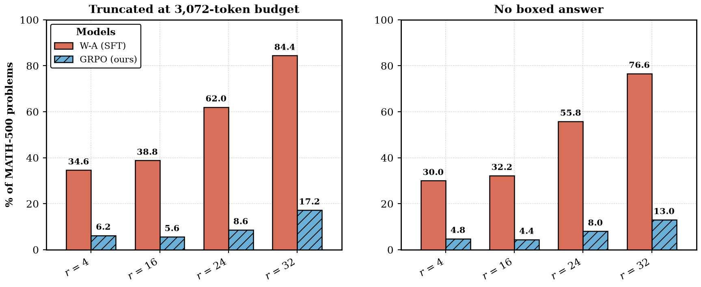

The broken half of the depth dial
Looped models have been becoming increasingly popular. Here's a good Github that I look at from time to time: here.
A looped model runs one shared transformer block \(r\) times per token before emitting anything. Ouro is the current billion-scale example: a 24-layer stack, looped, pretrained at \(r=4\), so the effective depth at the default setting is 96 layers. The loop count \(r\) is a dial you can turn at inference.
One of the problems with looped models is that models break down beyond the trained horizon. Here is Ouro-1.4B-Thinking on MATH-500 (greedy, 3,072-token budget, n=500) at different \(r\):
| \(r\) | 1 | 2 | 3 | 4 | 6 | 8 | 12 | 16 | 24 | 32 |
|---|---|---|---|---|---|---|---|---|---|---|
| accuracy | 0.188 | 0.636 | 0.722 | 0.710 | 0.712 | 0.678 | 0.348 | 0.058 | 0.004 | 0.000 |

For reference, Ouro was trained at \(r = 4\).
The analogy that I thought was somewhat similar was related to post-training and reasoning, before o1/o3-style RL. CoT made extra tokens useful through prompting, but it wasn't until reasoning and RL that the ability to use extra tokens became a lot more productive, and something that could be scaled.
I wanted to see if the same held in Ouro. That is, Ouro already knows how to benefit from recurrent depth up to its trained horizon (\(r=4\)), and I wanted to see if RL could fix some of that falloff, and convert deeper \(r\) into useful compute.
1. Loop depth as an action
I ran GRPO with depth as part of the action.
For each prompt I roll out at every depth in \(D = \{2, 4, 8, 16\}\): 48 prompts per step, 4 generations per depth, so 48 × 4 × 4 = 768 sequences per step. Sampling is temperature 1.0, top-p 1.0, with a 2,048-token response budget. The reward is 1 if the first boxed answer is verifier-correct, plus some other stuff in bonuses. A depth head learns a policy over \(r\) against
with \(\lambda = 0.1\). The shorthand "reward = correctness \(-\ 0.1 \cdot (r/16)\)" is good enough to think about it.
I compute advantages across depth groups. So I roll out the same prompt at every depth, and attach the cost \(Q(r)\) to depth. And so an \(r=16\) trajectory has to be good enough to justify spending the additional loops relative to the cheaper trajectories for that same problem. The lambda times \(r/16\) is a linear price on loop count.
Another thing that I wanted to see and was interested in is seeing if this RL could teach the model to generalize to unseen depths. That is, I left \(r=24\) and \(r=32\) out of the rollouts, as in I never rolled out prompts at those depths, but I evaluated them later.
Prompts come from DeepScaleR, decontaminated against every eval set and difficulty-filtered by pass@8 down to 8,932 training prompts.
For a stronger base model, I first ran a small SFT/STARS for one epoch on DeepMath. I randomly varied the depth across \(r \in \{2,4,6,8,12,16\}\). This repairs \(r=16\) from 0.058 to 0.620 and \(r=32\) from 0.000 to 0.178. I referred to this as W-A.
2. Four hundred steps
I then train from W-A for 400 RL steps on an 8xH100 node. Every 50 steps I evaluated at \(r \in \{4, 16, 24, 32\}\).
MATH-500 accuracy, greedy, n=500 (binomial standard error around 2.2 points):
| step | \(r=4\) | \(r=16\) | \(r=24\) | \(r=32\) |
|---|---|---|---|---|
| W-A baseline | 0.676 | 0.620 | 0.378 | 0.178 |
| 50 | 0.816 | 0.734 | 0.554 | 0.316 |
| 100 | 0.806 | 0.772 | 0.584 | 0.378 |
| 150 | 0.814 | 0.784 | 0.636 | 0.390 |
| 200 | 0.798 | 0.784 | 0.618 | 0.440 |
| 250 | 0.830 | 0.786 | 0.652 | 0.412 |
| 300 | 0.830 | 0.796 | 0.662 | 0.430 |
| 350 | 0.824 | 0.806 | 0.620 | 0.428 |
| 400 | 0.840 | 0.802 | 0.660 | 0.478 |


3. Depth extrapolation
Suppose RL had added 20 points of accuracy at every depth. Then, the \(r=32\) model would look much better, but the actual falloff beyond the training \(r=4\) would be the same, not really pointing towards the model had gotten better at unseen depths. And so I measured the falloff from \(r=16\) (which again, was the deepest depth used during RL). And we compare the falloffs from W-A versus our GRPO.
Define
for \(r\) in \(\{24, 32\}\).
| depth | baseline acc / trunc | DIAL acc / trunc | Δ acc | widening vs r4 (97.5% LB) | \(W(r)\) vs r16 (97.5% LB) |
|---|---|---|---|---|---|
| \(r=4\) | 0.676 / 34.6% | 0.840 / 6.2% | +16.4 | — | — |
| \(r=16\) | 0.620 / 38.8% | 0.802 / 5.6% | +18.2 | — | — |
| \(r=24\) | 0.378 / 62.0% | 0.660 / 8.6% | +28.2 | +11.8 (+5.6) | +10.0 (+3.8) |
| \(r=32\) | 0.178 / 84.4% | 0.478 / 17.2% | +30.0 | +13.6 (+6.6) | +11.8 (+4.8) |


4. Termination is not reasoning
Clearly, our GRPO's own accuracy still falls with depth. As in, our RL did not make more loops buy more accuracy (the motivating intuition).
Manually looking at some of W-A's and GRPO's completions, GRPO seemed to fix some behavior around termination. At \(r=32\), W-A hits the 3,072-token limit on 84.4% of MATH-500 problems, compared with 17.2% after GRPO. When W-A does finish, it gets around 80% right, it just has degenerate behavior, repeating things like "Wait," and/or never producing a final boxed answer.

This accounts for virtually all of the accuracy gain at \(r=32\). Of the 168 problems that GRPO gets right and W-A gets wrong, 160/168 are cases where W-A either ran out of tokens and had degenerate behavior or never produced a boxed answer. And so, at this depth, RL sort of just repairs degenerate behavior that base Ouro has.
5. What was already known
There is already quite a bit of work on learning how much recurrent compute to use. The Ouro paper has an early-exit mechanism that learns when to stop looping, but only within its trained depth. RLTT applies RL with verifiable rewards to Ouro, but keeps the model at \(r=4\). LoopRPT learns a per-token exit policy with RL, primarily to reduce average depth. And Kuo et al. use RL to learn a stopping policy for looped transformers, although on small algorithmic tasks.
The closest non-RL result is STARS, which uses random loop counts during supervised training to repair collapse at larger depths. My W-A baseline is essentially the simple version of that idea: randomize depth during SFT, then ask what RL adds on top.
So none of the individual ingredients here are new. The specific question I was interested in was narrower: can verifier-based RL train on a bounded set of depths, while explicitly pricing loop count, and improve behavior at deeper loop counts it never sees during RL?
While writing this, GPT has referred me to some more works about memory-budget separation. There may also be limits to treating loop depth exactly like token-level test-time compute. Extra loops add computation, but unlike a longer chain of thought they do not automatically create a larger explicit scratchpad.
Checkpoints are here.